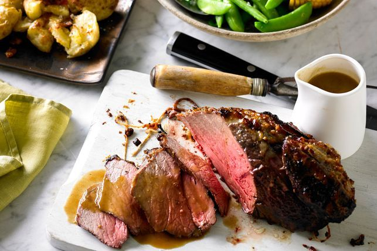

Rump Steak Recipe

Description
Update your roast recipe with this delicious miso rump, served with crushed potatoes and corn.
Ingredients
- 1kg beef rump roast
- 2 tbsp olive oil
- 1 1/2 tbsp miso paste
- 1 tbsp honey
- 1 tbsp light soy sauce
- 1 tbsp coriander seeds
- 450g chat potatoes
- 1 tsp ground cumin
Steps
- Preheat oven to 200C (180C fan-forced). Whisk half the oil, miso paste, honey, soy and coriander seeds in a small bowl Rub the marinade over the beef and season with pepper.
- Place the beef on a rack in a roasting dish. Add 3/4 cup water to the roasting dish (add more throughout the cooking process if needed). Roast for 40 minutes for rare, 50 minutes for medium and 60 minutes for well done. Cover the roast with foil if overbrowning. For ease and accuracy use a meat thermometer.
- Remove the beef, reserving pan juices, and cover loosely with foil and allow it to rest for 20 minutes before carving.
- Meanwhile, place the potatoes in another roasting dish, and crush with a potato masher or back of a fork. Drizzle with remaining olive oil and cumin. Season and toss to coat potatoes. Place in the oven with beef for last 30 minutes, turning potatoes occasionally, until golden.
- To make the gravy, place the reserved pan juices in a frying pan over medium-high heat. Add the stock, mirin and whisk in the miso paste. Boil until the mixture is reduced to a thin sauce like consistency. Pour in the juices from the rested beef roast. Whisk in the butter.
- Serve beef roast with the potatoes, miso gravy, sugar snaps and corn.